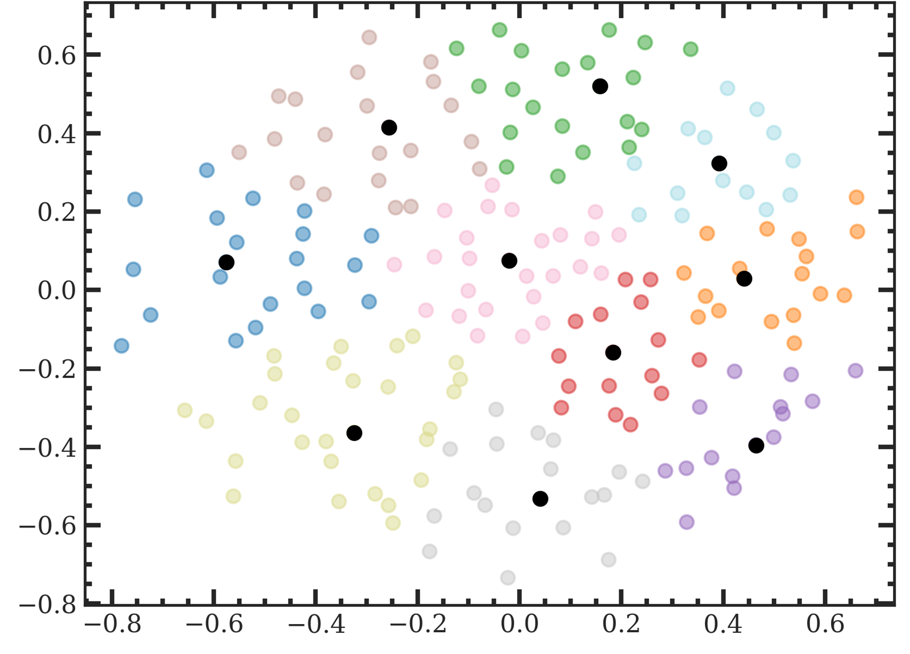

No great discovery was ever made without a bold guess - Isaac Newton
Spatiotemporal Down-Scaling Using Implicit Hypernetwork Neural Representation
Python implemented program that solves a design problem whose objective function is a spatially dynamic feature through an implementation of a Super Resolution Generative Adversarial Network (SRGAN). The main goal of this work is to reduce processing time and computational costs, compared to its extensive simulation based counterpart.
Numerical Modeling of Greenfield Carbon Storage Under Geological Uncertainty
Engineering uncertainty reduction frameworks for carbon capture storage
using the most optimal framework as a representative geological representation. The frameworks were engineered through the use of clustering, dimensionality reduction, and various other statistical methods.